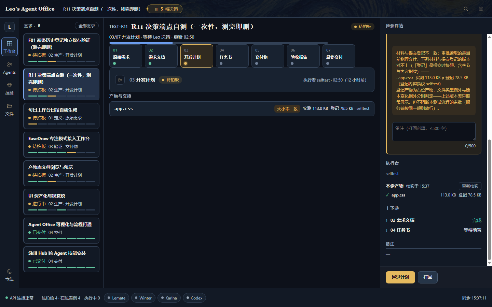
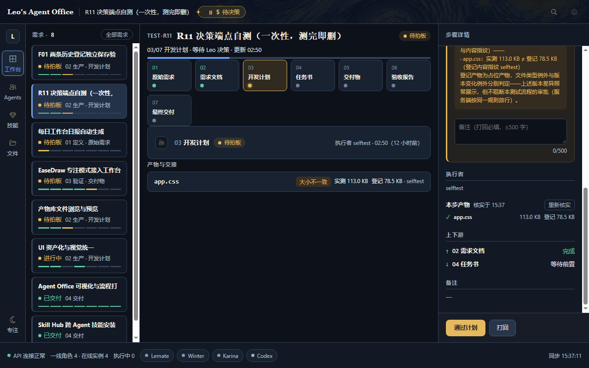
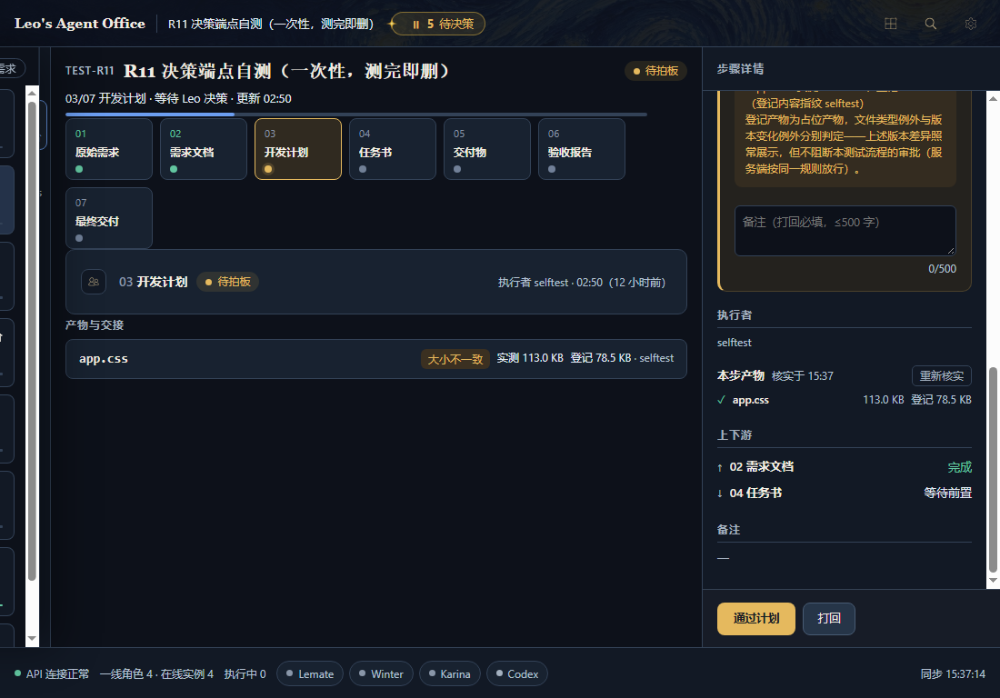

| # | 位置 | 改动 |
|---|---|---|
| 1 | app.css:372-376 | #insp-body padding 14px 16px 24px → 12px 16px 24px（顶部 14→12，直接改基础规则） |
| 2 | app.css:1832-1850（末尾追加层） | 说明文字五选择器 → 12px / 19px / #B8C5D6（源顺序压回 G01 r10 层的 12/18/#B3C0D2）；段落四选择器 margin: 12px 0 |
| 3 | app.js:1377-1383 | 删「类型要求」行内 .ev-policy chip；policyNote 成为测试策略唯一说明处（声明+含义+依据全文可见，信息无损） |
滚动链结构（head 48px / body min-height:0 + overflow-y:auto / foot 64px）W01 层已在位，本轮未动；备注草稿持久化（office.notes.v1）原有机制未动。
| 指标 | 1440×900 | 1280×800 | 1100×768 |
|---|---|---|---|
| head 高 / foot 高 | 48px / 64px | 48px / 64px | 48px / 64px |
| foot 可见 / 滚动时钉底 | true / true | true / true | true / true |
| #insp-body padding | 12/16/24/16 | 12/16/24/16 | 12/16/24/16 |
| min-height / overflow-y / overflow-x | 0px / auto / hidden | 0px / auto / hidden | 0px / auto / hidden |
| 横向溢出 | 0 | 0 | 0 |
| 滚底 maxTop | 561 | 661 | 693 |
| 滚底最后一块完整可见 | true | true | true |
| 最后一块底边 ↔ foot 顶边 | 24.3px ≥16 | 24.3px ≥16 | 24.3px ≥16 |
| mm 警示块滚底可读 / 与 foot 重叠 | true / false | true / false | true / false |
| 属性 | baseline | after | 任务书 |
|---|---|---|---|
| font-size | 12px | 12px | 12px ✅ |
| line-height | 18px | 19px | 19px ✅ |
| color | #B3C0D2 | rgb(184,197,214) = #B8C5D6 | #B8C5D6 ✅ |
| margin-top / bottom | 12px / 12px | 12px / 12px | 段落间距 12px ✅ |
| 口径 | baseline | after |
|---|---|---|
| .ev-policy chip 数 | 1 | 0 |
| policyNote 段数 | 1 | 1（全文保留含依据） |
| 正文「test-any-file」出现次数 | 2（重复） | 1 |
| 「类型要求」行 | 类型要求plan · 测试策略 test-any-file 生效（…） | 类型要求plan |
mmNote / mmTail 独有判定口径未动，不删审批证据。
Page.reload{ignoreCache:true}：scrollTop 全 0，最大偏差 0px（≤2px 达标）office.notes（实为 office.notes.v1，app.js:295）→ lsSaved:false 是探针的坑；备注扛过 10 次硬刷新即持久化生效的行为证据scrollTop=200，10 次采样：tops 全 200，maxDrift 0px；审批态 / 任务选中全程保持。
v16-payload-*（1.3G×2）、v16-stage（1.1G）、dy-upgrade-20261012 / 20261011（879M×2）、dist_0557.tgz + _dist_decoded.gz（~1.4G）。.ev-policy CSS 规则（app.css:1495/:1639）随 chip 删除成死代码，按最小改动原则保留。

